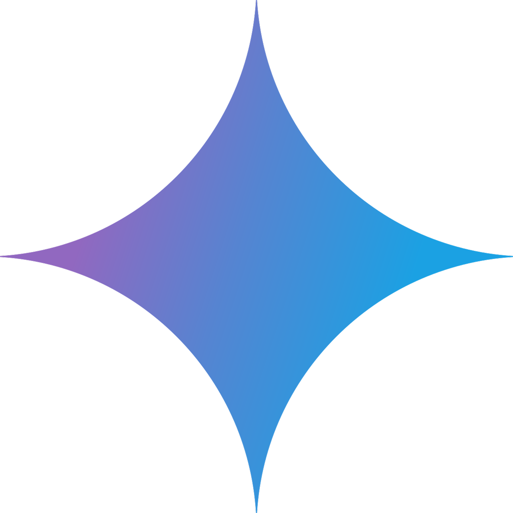

За допомогою Gemini було спрощено дуже багато роботи та створено чітку структуру проєкту. Він повністю взяв на себе написання всього JS-коду, допоміг розкласти по поличках та впорядкувати CSS, а також став справжнім близьким помічником, який виручав у будь-якій складній ситуації — від складання плану розробки до вирішення багів, хоч звісно коли виправлялося одне ламалося друге — але з ним все вийшло, та і не тільки я користуюсь штучним інтелектом в класі — хоч ми це і так розумієм, я хочу бути чесним і не перекидувати на себе гордість за те що я не дуже або взагалі не вмію.

✦ ★ ✦GEMINI
hover me
SOURCES
hover me
Під час створення цього проєкту я використовував різні джерела та інструменти, які допомагали мені на різних етапах роботи. Частину зображень і візуальних матеріалів я знаходив на Pinterest, оскільки він дуже допомагав із пошуком ідей, референсів та натхнення для дизайну. Детальнішу інформацію, приклади реалізації та різні навчальні матеріали я знаходив на GitHub та інших ресурсах для розробників.
Також значну частину консультацій я проводив за допомогою Gemini. Він допомагав мені розібратися з незрозумілими моментами, пояснював принцип роботи окремих елементів та допомагав знаходити помилки під час розробки. Це було особливо корисно у випадках, коли я розумів, що саме хочу отримати, але не знав, як правильно реалізувати це технічно.
При цьому саму ідею, дизайн, структуру та загальний вигляд проєкту я створював і підбирав самостійно. ШІ був для мене не заміною всієї роботи, а інструментом, який допомагав швидше розібратися зі складними або незнайомими речами
@NULLSBODY
hover me
Учень, який створив цей проєкт. Я використовував ШІ, щоб спростити як гігантські, так і маленькі завдання. Наприклад, написання JavaScript — я не кодер і, чесно кажучи, не дуже люблю з цим возитися. Мені набагато більше подобається дизайн. Тому JS без проблем написав ШІ :] Але щодо самого сайту — його стиль і дизайн придумав я. ШІ допоміг це доробити. Верстку теж писав я, а ШІ допомагав виправляти помилки. Звісно, я можу писати стилі й створювати макети сам. Я це й робив. Просто чесно кажучи, деякі речі я вже позабував, і тому довелося звернутися до ШІ. Тож так: приблизно 68% тут мене і 32% ШІ. Чи звинувачую я себе за те, що щось забув або не вивчив? Так. ТАК ЩО ВЧІТЬСЯ! Але я радий, що нам дають такі серйозні проєкти. Навіть якщо тут використовувався ШІ, я вклав у цей проєкт усе, що міг. Це не просто копіпаст — тут є набагато більше. Я радий, що Logika дала нам цей проєкт. Чим більше проєктів я роблю — навіть із допомогою ШІ — тим кращими вони стають у порівнянні з моїми минулими роботами. І я не хочу нікому брехати чи поширювати неправдиву інформацію. Тому кажу всім чесно: ось як усе було.